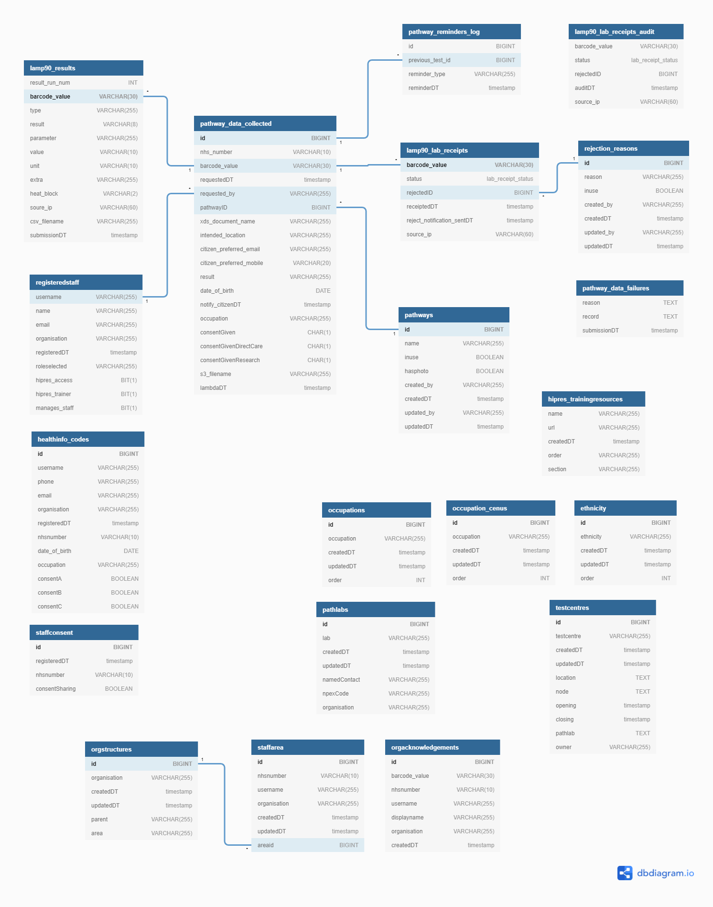

Pathway Name {{ task.pathwayname }} Result {{ task.result }} Barcode {{ task.barcode_value }} Submitted Time {{ task.requestedDT }}
Database Structure

Database Notes
lamp90_results - Table that stores results as received from Lab, linked on barcode_value to pathway_data_collected
pathway_data_collected - Table that stores Tests requested, initially populated by mobile app submission of a test & barcode. Each row is updated throughout process of test from test taken to resulting and notification being sent to test subject of result. The occupation field here is used to inform decision on which Organisation can view result (e.g. occupation = "BTH Staff Member" would be shown to Blackpool Teaching Hospital team)
registeredstaff - Populated as staff complete initial sign up form in order to grant access to the Mobile App
healthinfo_codes - Populated by staff completing the section of the onboarding site that allows them to pre-populate the test questions in the Mobile App. Used to save time for staff who repeat testing by linking their NHS Number to their Active Directory account.
staffconsent - NO LONGER USED
pathway_reminders_log - Log of when follow up reminders messages are sent to staff. Automated to go out 7 days after a previous negative test or 90 days after a previous positive test (if the person hasn't taken a subsequent test already)
pathways - Lookup of the different Pathway types (e.g. "LAMP - Self Test", "LAMP - Test Others")
lamp90_lab_receipts - Record of Lab scanning in barcode of test vial on receipt into the laboratory.
rejection_reasons - List of valid rejection reasons
lamp90_lab_receipts_audit - audit table for actions taken on lab receiption machines
pathway_data_failures - log of any failures in automated pipeline of messages across the system
trainingresources, occupations, occupation_census, ethnicity, pathlabs, testcentres - tables to populate dropdowns in applications
orgstructures - department/division structure for each organisation, to allow staff to select their own area(s), in order to allow Occupation Health teams to filter by area
staffarea - recording of which NHS Number is assigned to which area
orgacknowledgements - record of when Organisation staff have acknowledged a member of staff's positive result on the Workforce Dashboard